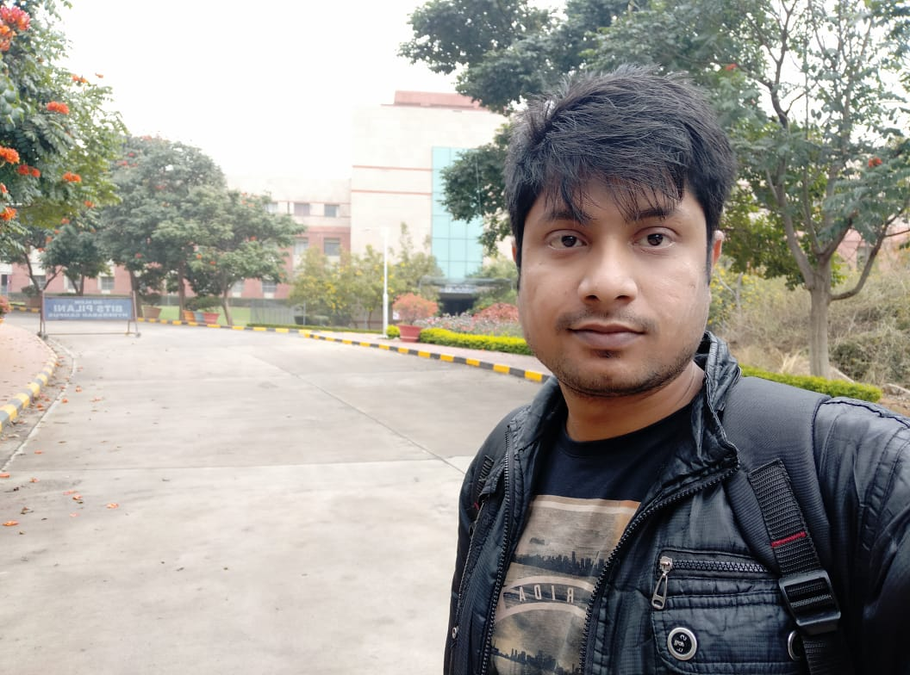

|
|
Dr. Paresh Saxena is an Assistant Professor in the Dpt. of Computer Science & Information Systems, BITS-Pilani, Hyderabad, India.
He is currently leading a project MUT-DROCO (Multipath Networking Testbed for Drone Communications) funded by DST-SERB,
Govt. of India and a project NANCY (Neural Adaptive Network Coding for video transmission over wireless networks) funded by TCS, India.
Previously, he has been involved as a work package leader in two European Space Agency (ESA) funded projects: SatNetCode and HENCSAT, along with a work package member in European H2020 funded project Geo-Vision.
He was a member of European COST action IC1104 from 2013-2016 and worked on the project funded by MITACS, Canada in 2008.
He has been a visiting researcher in SFU, Vancouver, Canada in 2008 and Telecom ParisTech, Paris in 2010.
During his PhD from UAB, Barcelona, Spain, he was awarded UAB Doctoral Fellowship Grant (P.I.F) from 2011-2015.
Post-PhD, he was fortunate to spend a few years at AnsuR Tech., Oslo, Norway as a Senior researcher from 2015-2018.
Prior to his graduation, he was awarded with a National Talent Search Examination (NTSE) scholarship, India where he scored overall 11th rank in the country.
His primary research focus is on the design and implementation of reliable and robust data transfer protocols for Non-terrestrial networks.
Email: psaxena@hyderabad.bits-pilani.ac.in
|
News
|
Selected Projects/Fellowships
|
MUT-DROCO: Multipath Networking Test-bed for Drone Communications
Funding Agency: DST-SERB, Govt. of India.
Year: 2020-2022
Project Type: Research & Development
|
NANCY: Neural Adaptive Network Coding methodologY for video distribution through wireless networks.
Funding Agency: TCS, India .
Year: 2019-2023
Project Type: Fellowship for PhD Student
|
Real-time Performance Analysis of Network Coding Implementation
Funding Agency: BITS Pilani, India.
Year: 2020-2022
Project Type: Research & Development
|
HENCSAT: Highly Efficient Network Coding for Satellite Applications Test-bed.
Funding Agency: European Space Agency, Netherlands .
Year: 2016-2020
Project Type: Research & Development
|
SatNetCode: Satellite Network-Coding for High Performance, Semantic-Aware Mission Critical Visual Communications.
Funding Agency: European Space Agency, Netherlands .
Year: 2015-2018
Project Type: Research & Development
|
PhD Fellowship
Funding Agency: Govt. of Spain, UAB, Barcelona, Spain
Year: 2011-2015
Project Type: Fellowship
|
National Talent Search Examination (NTSE) Fellowship
Funding Agency: National Council of Educational Research and Training, India.
Year: 2002
Project Type: Fellowship
|
Visiting Researcher Fellowship
Funding Agency: ParisTech, Paris, France
Year: 2010
Project Type: Research & Development
|
Visiting Researcher Fellowship
Funding Agency: Simon Fraser University, Vancouver, Canada
Year: 2008
Project Type: Fellowship
|
Research Group
Ph.D. Students
Pattiwar Shravan Kumar

I am PhD student in BITS Pilani, Working under the guidence of Professor Paresh Saxena , I have some years of experience in software industry worked on web related projects, my area of interest are
Computer Networks, Network Security, Machine learning, Wireless communications, currently we are working On different drone related technologies and Multipath protocols
Pattiwar Shravan Kumar
I am PhD student in BITS Pilani, Working under the guidence of Professor Paresh Saxena , I have some years of experience in software industry worked on web related projects, my area of interest are
Computer Networks, Network Security, Machine learning, Wireless communications, currently we are working On different drone related technologies and Multipath protocols
Pattiwar Shravan Kumar
I am PhD student in BITS Pilani, Working under the guidence of Professor Paresh Saxena , I have some years of experience in software industry worked on web related projects, my area of interest are
Computer Networks, Network Security, Machine learning, Wireless communications, currently we are working On different drone related technologies and Multipath protocols
Undergraduate Researchers
Student 1
Student 2
Student 3
|
Selected Publications
|
|
|
P. Saxena, M. Naresh, M. Gupta, A. Achanta, S. Kota and S. Gupta, “NANCY: Neural Adaptive Network Coding methodologY for video distribution over wireless networks” Accepted in IEEE Global Communications Conference (Globecom), Taipei, Taiwan, Dec 2020.
|

|
A. Kasturi, A. R. Ellore, P. Saxena, and C. Hota, “ Hybrid Fusion Learning: A Hierarchical Learning Model for Distributed Systems”, 4th International Workshop on Deep Learning for Mobile
Systems and Applications (26th MobiCom 2020), ACM, London, Sept 2020
|
|
|
P. Saxena, T. Dreibholz, H. Skinnemoen, O. Alay, M. A. Vazquez-Castro, S. Ferlin and G. Acar, “Resilient Hybrid SatCom and Terrestrial Networking for Unmanned Aerial Vehicles” in in Proceedings of the 39th IEEE International Conference on Computer Communications (INFOCOM), International Workshop on Wireless Sensor, Robot and UAV Networks (WISARN), Toronto, Canada, July 2020.
|
|
|
P. Saxena and M. A. Vazquez-Castro, “DARE: DoF-Aided Random Encoding for network coding over lossy line networks”, IEEE communication letters, vol. 19, no. 8, pp. 1374-1377, August 2015.
.
|
Collaborators
Collaborator Name
Description and details about the Collaborator like research interest work contribution...
Collaborator Name
Description and details about the Collaborator like research interest work contribution......
|
Past Students
Past Student Name
Description and details about the past student like when he passed what he did right now what he is doing
oppurtunities with him current area of interest and all...
Past Student Name
Description and details about the past student like when he passed what he did right now what he is doing
oppurtunities with him current area of interest and all...
|
|
{kind=link}